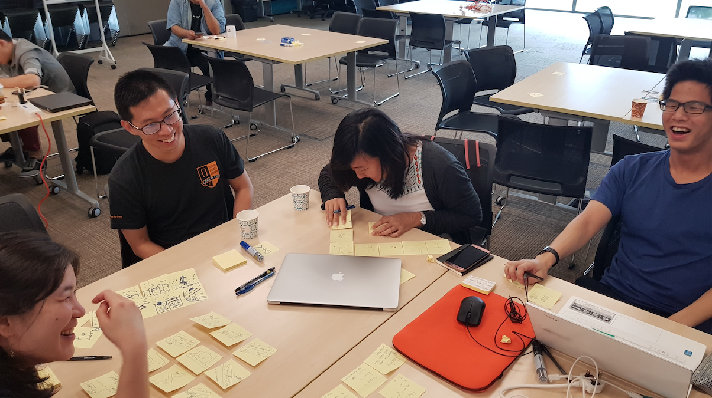
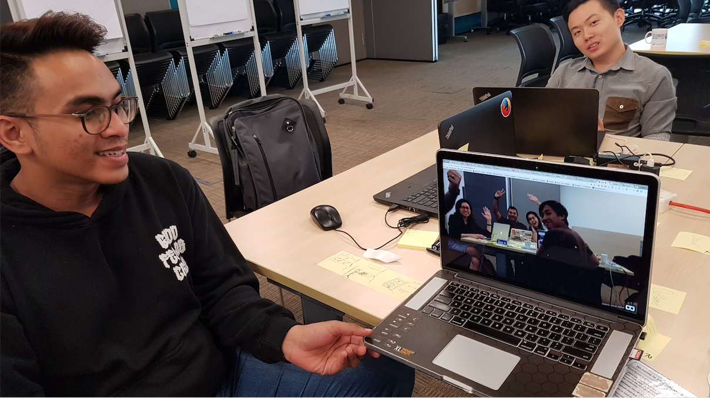
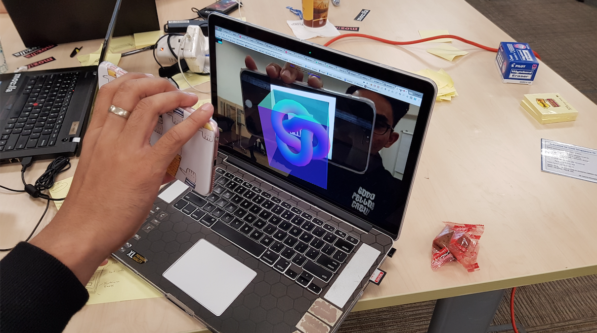
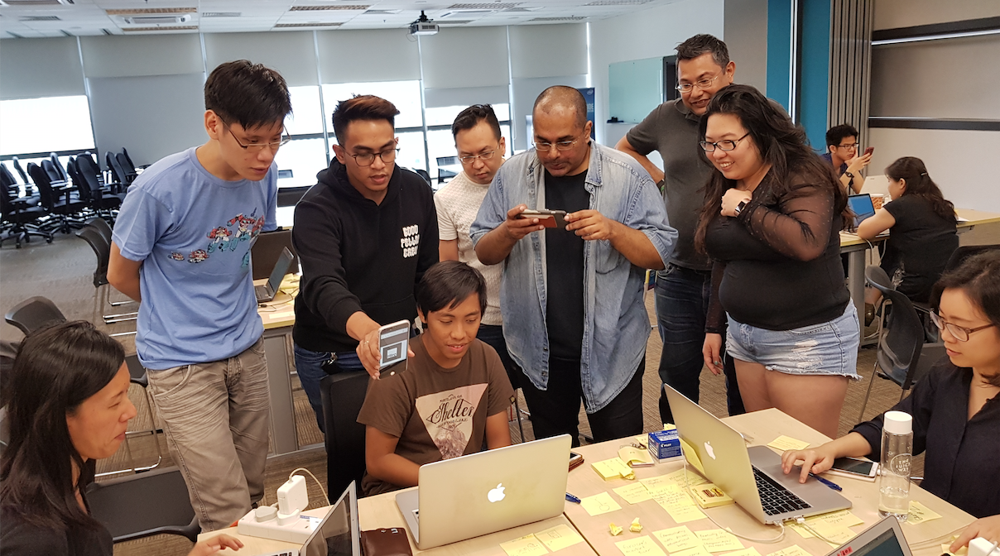

Augmented City - Singapore
vraframewebvraugmented citysingaporeThis post is part of the Augmented City series. The first post is introduced A-Frame as a tool for creating 3D content for the web. The second post introduced VR on the web. These were prep posts for the event attendees. This post is about the design and goals for the first event, and how it went.
We brought a group of developers and designers together for a day to explore how a city can be experienced using VR and AR. The day was split into a lightweight ideation workshop in the morning and team coding after lunch. The technical focus was to use A-Frame, a declarative 3D authoring tool for VR on the web, to rapidly prototype the ideas from the morning.
Event Concept: The Un-Hackathon
Augmented City is an experimental event series created collaboratively by the XR Alliance and Mozilla. The kickoff of this first installment was supported by Intel, and was in Singapore on July 15, 2017.
Vanessa Radd, Chris Gomez and I met at FOSSAsia in March, and they reached out about doing an event together where professionals can learn and create VR and AR experiences together as a group.
We wanted an event that...
-
Had a specific theme, instead of an overly broad prompt of "make stuff!"
-
Was oriented towards experienced professionals, not beginners (there are loads of those events already)
-
Welcomed both developers and designers
-
Had a focus on actually making something, not a series of talks
-
Was not competitive - no "winners" and "losers", no prizes
-
Treated the participants humanely: One day, no overnights, start at a reasonable hour, and serve healthy food (no pizza!)
The theme that Chris came up with was "augmented city", which is flexible and broad enough that we could do a series of events, possibly in different cities, experimenting with the format to refine it over time.

Event Design: The Un-Hackathon
In May I'd helped out at the Mozilla VoiceJam, a two-day design sprint with Michael Henretty and Shing Lyu, which invited local designers, researchers and developers to get together to come up with ways to get people to donate their voices for Project CommonVoice.
At that event we used some of the human-centered design practices in Mozilla's Open Innovation Toolkit to help the group come up with ideas and refine them over two days.
At this event, I wanted to take it a step further and see if we can take a group from innovation prompt to working code in one day.
I wanted the participants to spend time thinking divergently on the overall topic, in order to reset their imaginations - sort of a palate cleanser for the day. I also wanted them thinking divergently within their selected project area, to reduce attachment to previously conceived project ideas (their own, or seeded by our prep materials).
The prompt for the day was:
"How can we augment or virtualize our experience of Singapore in ways that are interesting, engaging and fun?"
The main parts of the final program:
- Prep participants in advance on A-Frame.
- Create teams on arrival.
- Ideation round on innovation prompt.
- Ideation round on project ideas.
- Team coding.
We wanted a mix of developers and designers, so on the Eventbrite page, offered tickets for each. This means we knew in advance that the ratio was almost 50/50.

How The Day Went
Prep: We published a few blog posts to prep the participants for A-Frame and how to do VR on the web, including those in the pre-event emails. However, in a show of hands at the actual event, we found almost nobody read any of the material. Lesson learned!
Teams: As we knew the participants were split down the middle, I put post-its marked with numbers in two stacks by the doors, one stack for developers and another for designers, that matched with corresponding numbers on the tables. This way, teams were selected at random, divided evenly by role, and and no time was wasted during the event on team-making. A sound strategy in theory. In reality, the people who showed up were almost exclusively developers.
Topic Ideation: This was a sped-up version of the Idea Generation process of diverging then converging ideas from the group, done in teams with post-its at their tables. The teams seemed to have a blast, and the exercise seemed useful in helping design the landscape of ideas for the rest of the day.
Project Ideation: We used the same Idea Generation process as before, but seeded it the top two categories from the first ideation round. The goal here was to narrow down all the project ideas generated based on the categories in the first round, into one project idea. It definitely was successful in generating project ideas from categories, but the narrowing didn't really work - teams had multiple ideas and really needed more time to coalesce on one.
Coding: Almost two-thirds of the time of the event was allocated to actually making the selected idea. This was good, as the first two hours was spent getting people up to speed on A-Frame. As people got more comfortable with the tool and dev workflow, the pace and excitement quickened, with people showing the things they got working. Some teams worked together on one idea, some teams worked on their individual ideas, but communicating and sharing as they went.
Closing: At 5:30pm, people were still focused and coding, with the occasional whoop when something worked. We did a quick share around the room, had a conversation about how people felt about the event itself, and closed it down.

Notes for Next Time
-
Move any prep material into the event itself. Next time I'd add a one-hour A-Frame bootstrap workshop into the program, maybe even before the ideation section...
-
Make teams only once everyone is in the door. Was a nice experiment, but too much can go wrong, forcing time to be used to readjust teams later anyway.
-
Before team-making, do a whole-group activity, even it's speed intros.
-
Redesign the ideation parts to be one session with multiple activities that results clearly in one and only one project.
-
Glitch worked. People were able to get examples up and running in no time at all, and started remixing them to meet their own project needs.
-
Common issues that came up when working with A-Frame: How to load transparent PNGs, how to position a specific part of a 360 degree photo as the default view, and how to train AR markers, how to use the and reference assets, and what exactly to modify when you've got an asset, a link and the actual entity itself.
-
Things that came easy in A-Frame were almost entirely due to the flow of being able to remix the examples on aframe.io on Glitch. Once I showed people that flow, things really got moving. However, it also meant that the projects all contained the same layouts, default entities, text, etc. Need to find a way to use that flow but encourage visual differentiation.
-
I need to make a better set of A-Frame starter Glitch examples for AR scenarios based on my demos. Right now they're too hard to remix.
Overall the event went really well. Most gratifiying was seeing how focused everyone was in the afternoon, and how many people stuck to the theme. People definitely were deep in the flow, using A-Frame to bring their ideas to life, which is a win.
The resources, links and projects from the event are all collected on the augmented-city/singapore repo on Github.
See you at the next one!
